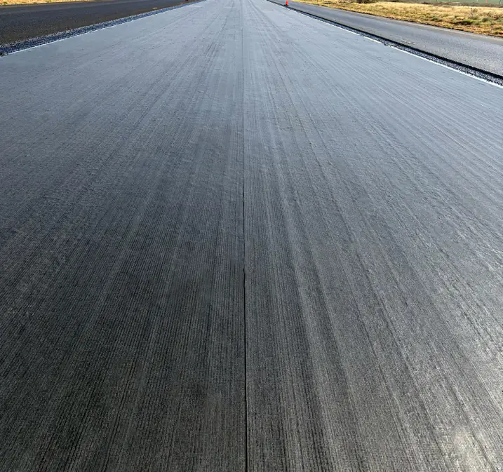

ROADGLAS®
Pound for pound | Stronger than steel


Transportation authorities integrated fiberglass reinforcement into master specifications for high-volume interstate highways.
Public and private civil engineering agencies routinely require structural glass reinforcement interlayers:

High tensile strength fiberglass resists fatigue cracking, severe rutting, shoving, and traffic-induced mechanical stress. Ideal for heavy truck routes.
Public and private civil engineering agencies routinely require structural glass reinforcement interlayers:

Fiberglass reinforcement is part of master specifications for commercial airports.
Public and private civil engineering agencies routinely require structural glass reinforcement interlayers:

Fewer cracks and minimal pavement repairs mean fewer lane closures and fewer commuter complaints.
Public and private civil engineering agencies routinely require structural glass reinforcement interlayers:
Achieves far more years of service from the exact same overlay investment.
Public and private civil engineering agencies routinely require structural glass reinforcement interlayers:

Strengthens existing structures from within rather than completely removing and rebuilding them.
Public and private civil engineering agencies routinely require structural glass reinforcement interlayers:

Share your project details and we will help you match RoadGlas® to your application.